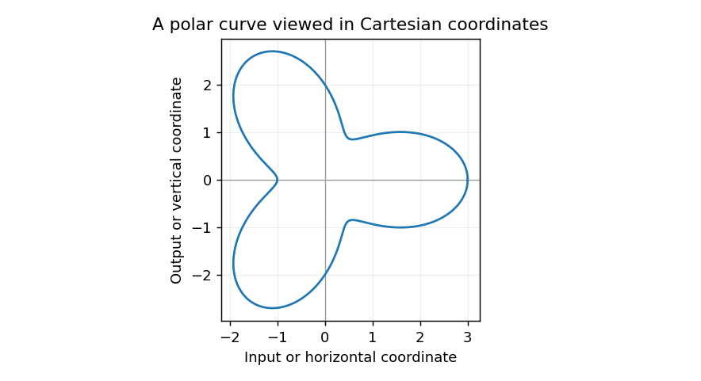
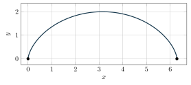
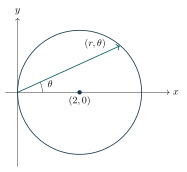
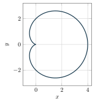

Parametric Equations and Polar Coordinates
Guiding question. How can we describe a path that loops, doubles back, or traces a trajectory without forcing it to be the graph of a single function \(y=f(x)\)? Parametric equations and polar coordinates answer this question in complementary ways.
Learning outcomes. Students will parametrize and interpret plane curves; determine tangent slopes, concavity, area, and arc length parametrically; convert between Cartesian and polar coordinates; sketch and analyze polar graphs; compute polar area and length; derive polar equations of conics; and use R and Python to verify and communicate mathematical results.
Prerequisites. Trigonometric functions, the chain rule, definite integrals, substitution, and elementary conic sections.
Visual concept investigation
A curve can have many descriptions
Parametric and polar equations describe geometric points through auxiliary variables. Different parameterizations may trace the same curve at different speeds or in different directions. A polar graph must be interpreted using the signed radius convention rather than as an ordinary Cartesian function.

Guided investigation. Explain how \(x=\cos t\), \(y=\sin t\) and \(x=\cos(2t)\), \(y=\sin(2t)\) trace the same unit circle with different traversal behavior.
Interactive investigation: Polar curves
Parametrizations of Plane Curves
Definition — Parametrized plane curve. A parametrization of a plane curve is a pair of functions \(x=f(t)\) and \(y=g(t)\) defined on an interval \(I\). The vector \(\mathbf r(t)=(f(t),g(t))\) gives a position for each parameter value. The image of \(\mathbf r\) is the set of traced points; its orientation records the direction as \(t\) increases.
A parameter is often time, but it can be an angle, distance, or a convenient mathematical variable. Unlike \(y=f(x)\), a parametrization can represent a vertical tangent, a closed loop, or a path traversed multiple times. The interval matters: identical formulas with different intervals may describe different parts of a curve.
Example — A restricted parabola. Let \(x=t^2\), \(y=2t-1\), \(0\le t\le3\). Describe the path and direction.
Solution. From \(t=(y+1)/2\), we obtain \(x=(y+1)^2/4\). Yet only the branch \(y\ge-1\) with \(x\le9\) is traced. The motion begins at \((0,-1)\) and ends at \((9,5)\), moving upward and to the right. Eliminating \(t\) without the interval would incorrectly suggest the entire parabola.
Example — One ellipse, two motions. Consider \(x=4\cos t\), \(y=2\sin t\).
Solution. The image satisfies \(x^2/16+y^2/4=1\). On \(0\le t\le2\pi\), it is traversed once counterclockwise from \((4,0)\). Replacing \(t\) by \(-t\) reverses orientation, while \(0\le t\le4\pi\) traverses the same ellipse twice. Thus an equation for the image does not encode all features of the motion.
Theorem — Line-segment parametrization. For points \(A=(a_1,a_2)\) and \(B=(b_1,b_2)\), the segment from \(A\) to \(B\) is \(\mathbf r(t)=A+t(B-A)\), \(0\le t\le1\).
Proof. At \(t=0\) the position is \(A\), and at \(t=1\) it is \(B\). For \(0\le t\le1\), \(\mathbf r(t)=(1-t)A+tB\) is a convex combination of the endpoints, giving precisely the segment.
Example — A rolling-wheel trace. A wheel of radius \(a\) rolls without slipping along the horizontal axis. A marked point on the rim traces \(x=a(t-\sin t)\), \(y=a(1-\cos t)\) for \(0\le t\le2\pi\).
Solution. The wheel center is \((at,a)\); relative to the center the marked point is \((-a\sin t,-a\cos t)\). Adding gives the displayed cycloid. Its endpoints \((0,0)\) and \((2\pi a,0)\) are cusps: both coordinate derivatives vanish there. The geometry explains why a simple Cartesian function is not the natural first description.

Remark. A plot that samples \(t\) uniformly does not necessarily place points uniformly along the curve. When speed varies, equally spaced times correspond to unequal traveled distances.
Pause and reason
Can two parametrizations have the same image but different speed? Give an example using a circle.
Calculus with Parametric Curves
Let \(x=f(t)\) and \(y=g(t)\) be differentiable. The chain rule converts time rates into geometric slope, provided the horizontal rate is nonzero.
Theorem — Parametric tangent slope. If \(f'(t_0)\ne0\), then the slope of the tangent at \(t_0\) is \(\displaystyle\frac{dy}{dx}=\frac{g'(t_0)}{f'(t_0)}\).
Proof. Locally, \(x\) can serve as an independent variable when \(f'(t_0)\ne0\). The chain rule gives \(dy/dt=(dy/dx)(dx/dt)\), so division by \(dx/dt\) yields the result.
Example — A tangent to an ellipse. For \(x=3\cos t\), \(y=2\sin t\), find the tangent line at \(t=\pi/3\).
Solution. We have \(dx/dt=-3\sin t\) and \(dy/dt=2\cos t\). Hence \(dy/dx=-2\cos t/(3\sin t)=-2/(3\sqrt3)\) at \(t=\pi/3\). The point is \((3/2,\sqrt3)\), so the tangent is \(y-\sqrt3=-\frac{2}{3\sqrt3}(x-\frac32)\).
Theorem — Second derivative of a parametric curve. Where \(dx/dt\ne0\), \(\displaystyle\frac{d^2y}{dx^2}=\frac{\frac{d}{dt}(dy/dx)}{dx/dt}\).
Example — Concavity of a trajectory. For \(x=t^2+1\), \(y=t^3-t\), determine the slope and concavity at \(t=1\).
Solution. \(dy/dx=(3t^2-1)/(2t)\) for \(t\ne0\). Differentiating gives \(\frac{d}{dt}(dy/dx)=\frac32+\frac{1}{2t^2}\), and therefore \(d^2y/dx^2=(3t^2+1)/(4t^3)\). At \(t=1\) the slope is \(1\) and the second derivative is \(1\), so the curve is locally concave upward.
Theorem — Speed and arc length. For a continuously differentiable curve \(\mathbf r(t)=(x(t),y(t))\), \(a\le t\le b\), its speed is \(v(t)=\sqrt{(x'(t))^2+(y'(t))^2}\) and its arc length is \(L=\int_a^b v(t)\,dt\).
Proof — Derivation. A short displacement has length \(\sqrt{(\Delta x)^2+(\Delta y)^2}\). On a sufficiently small time interval, \(\Delta x\approx x'(t)\Delta t\) and \(\Delta y\approx y'(t)\Delta t\). Summing the resulting short distances and taking a limit produces the integral.
Example — Length of one cycloid arch. Find the length of \(x=a(t-\sin t)\), \(y=a(1-\cos t)\), \(0\le t\le2\pi\).
Solution. \(x'=a(1-\cos t)\) and \(y'=a\sin t\). Thus \(v=a\sqrt{2-2\cos t}=2a\sin(t/2)\) on \([0,2\pi]\). Integrating gives \(L=\int_0^{2\pi}2a\sin(t/2)\,dt=8a\). Notice that the straight-line displacement is only \(2\pi a\).
Theorem — Signed area under a parametric curve. If a parametrized arc runs from \(x(a)\) to \(x(b)\) and is representable as a graph over that interval, its signed area relative to the \(x\)-axis is \(\displaystyle\int_a^b y(t)x'(t)\,dt\).
Remark. The sign depends on orientation and whether the curve lies above or below the axis. For a loop, the integral \(\oint y\,dx\) is related to oriented enclosed area; do not automatically interpret a signed integral as an unsigned physical area.
Example — Area under a parametric arch. Let \(x=t^2\), \(y=3t-t^2\), \(0\le t\le3\). Compute the area above the axis.
Solution. On this interval \(x'=2t\ge0\) and \(y=t(3-t)\ge0\). The area is \(\int_0^3(3t-t^2)(2t)\,dt=\int_0^3(6t^2-2t^3)\,dt=[2t^3-\frac12t^4]_0^3=27/2\).
Concept check
Why can \(dx/dt=0\) suggest a vertical tangent without guaranteeing one? What additional information would you examine at a cusp?
Polar Coordinates
In Cartesian coordinates, a point is described by horizontal and vertical displacements. In polar coordinates, we describe its distance and direction relative to an origin and reference ray.
Definition — Polar coordinates. A polar representation \((r,\theta)\) satisfies \(x=r\cos\theta\) and \(y=r\sin\theta\). Here \(r\) is a signed radial coordinate and \(\theta\) is an angle measured in radians.
Theorem — Coordinate conversion. The relations \(x=r\cos\theta\), \(y=r\sin\theta\), and \(r^2=x^2+y^2\) connect polar and Cartesian coordinates. For \(r>0\), \(\theta\) may be selected using the quadrant-aware angle of \((x,y)\).
Remark. Polar coordinates are not unique: \((r,\theta)\) and \((r,\theta+2\pi k)\) represent the same point. Also \((-r,\theta)\) and \((r,\theta+\pi)\) represent the same point. The origin has no unique direction.
Example — Convert a point. Convert \((-\sqrt3,1)\) to polar coordinates with \(r\ge0\) and \(0\le\theta<2\pi\).
Solution. \(r=\sqrt{3+1}=2\). The point lies in Quadrant II with reference angle \(\pi/6\), hence \(\theta=5\pi/6\). The pair is \((2,5\pi/6)\).
Example — Convert a curve. Convert \(r=4\cos\theta\) to a Cartesian equation and identify its graph.
Solution. Multiply by \(r\): \(r^2=4r\cos\theta\), giving \(x^2+y^2=4x\), or \((x-2)^2+y^2=4\). The curve is a circle centered at \((2,0)\) with radius \(2\).

Pause and reason
Why is using \(\arctan(y/x)\) alone unreliable for determining the angle of a point in Quadrant II or III?
Graphing in Polar Coordinates
A polar graph \(r=f(\theta)\) is traced by the Cartesian parametrization \(x=f(\theta)\cos\theta\), \(y=f(\theta)\sin\theta\). This provides a systematic bridge between polar graphs and the parametric calculus of Section 10.2.
Example — A cardioid. Sketch \(r=2(1+\cos\theta)\), \(0\le\theta\le2\pi\).
Solution. \(r\ge0\) and is largest (\(r=4\)) at \(\theta=0\). At \(\theta=\pi\), \(r=0\), producing a cusp at the pole. Because \(\cos(-\theta)=\cos\theta\), the curve is symmetric about the horizontal axis. Plotting the radial values at \(0,\pi/2,\pi,3\pi/2\) gives a useful skeleton; sampling intermediate angles fills in the shape.

Example — A rose curve. Analyze \(r=3\cos(2\theta)\) for \(0\le\theta\le2\pi\).
Solution. The signed radius changes sign, so a negative value plots in the opposite direction from the ray \(\theta\). The graph has four petals, each of maximal radial extent \(3\). Zero crossings occur where \(\cos(2\theta)=0\), that is, \(\theta=\pi/4+k\pi/2\). A Cartesian parametric plot avoids mistakes caused by negative \(r\).
Theorem — A sufficient symmetry test. If \(f(-\theta)=f(\theta)\), the polar graph \(r=f(\theta)\) is symmetric about the polar axis. If \(f(\pi-\theta)=f(\theta)\), it is symmetric about the vertical axis.
Proof. Reflecting the point \((f(\theta)\cos\theta,f(\theta)\sin\theta)\) across the horizontal axis yields \((f(\theta)\cos\theta,-f(\theta)\sin\theta)\), which equals the point traced at \(-\theta\) under the first condition. The second follows analogously by replacing \(\theta\) with \(\pi-\theta\).
Remark. These tests are sufficient, not necessary. Because polar representations are nonunique, a graph may have symmetry even if the simplest algebraic test fails.
Graphing workflow
Identify the interval; evaluate representative angles; check zeros and sign changes of \(r\); test symmetry; determine whether the curve retraces; then plot using \(x=r\cos\theta\) and \(y=r\sin\theta\).
Areas and Lengths in Polar Coordinates
Theorem — Polar area formula. For a polar curve \(r=f(\theta)\) traced once on \(\alpha\le\theta\le\beta\) without overlapping radial sectors, the enclosed sector area is \(\displaystyle A=\frac12\int_\alpha^\beta [f(\theta)]^2\,d\theta\).
Proof — Derivation. A thin circular sector of radius \(r\) and angle \(\Delta\theta\) has area approximately \(\frac12r^2\Delta\theta\). Sum these contributions and take a limit. The formula assumes the chosen parameter interval counts the desired region once.
Example — Area of a cardioid. Find the area enclosed by \(r=2(1+\cos\theta)\).
Solution. The curve is traced once over \(0\le\theta\le2\pi\), so \[A=\frac12\int_0^{2\pi}4(1+2\cos\theta+\cos^2\theta)\,d\theta=2(2\pi+0+\pi)=6\pi.\] The result has square units, as expected.
Example — One petal, not four. Find the area of one petal of \(r=3\cos(2\theta)\).
Solution. The right petal is traced over \(-\pi/4\le\theta\le\pi/4\). Hence \[A=\frac92\int_{-\pi/4}^{\pi/4}\cos^2(2\theta)\,d\theta=\frac92\cdot\frac\pi4=\frac{9\pi}{8}.\] Integrating over \(0\) to \(2\pi\) would count all four petals, not just one.
Theorem — Polar arc length. If \(r=f(\theta)\) is continuously differentiable on \([\alpha,\beta]\), the length of its parametrized trace is \(\displaystyle L=\int_\alpha^\beta\sqrt{f(\theta)^2+[f'(\theta)]^2}\,d\theta\).
Proof. Set \(x=r\cos\theta\), \(y=r\sin\theta\). Then \(x'=r'\cos\theta-r\sin\theta\) and \(y'=r'\sin\theta+r\cos\theta\). Expanding and adding gives \((x')^2+(y')^2=(r')^2+r^2\). Apply the parametric arc-length formula.
Example — Length of a cardioid. Find the length of \(r=2(1+\cos\theta)\), \(0\le\theta\le2\pi\).
Solution. Since \(r'=-2\sin\theta\), the integrand becomes \(\sqrt{4(1+\cos\theta)^2+4\sin^2\theta}=4|\cos(\theta/2)|\). Splitting at \(\theta=\pi\) yields \(L=4\int_0^{2\pi}|\cos(\theta/2)|\,d\theta=16\).
Remark. An integral of \(r^2\) computes area; an integral of \(\sqrt{r^2+(r')^2}\) computes length. They represent different geometric accumulations and have different units.
Conics in Polar Coordinates
A conic can be described by the ratio of distance to a fixed point (the focus) and distance to a fixed line (the directrix). The constant ratio is its eccentricity.
Definition — Focus–directrix conic. A conic with eccentricity \(e>0\) is the set of points \(P\) satisfying \(\operatorname{dist}(P,F)=e\,\operatorname{dist}(P,\ell)\), where \(F\) is a focus and \(\ell\) a directrix. Ellipses have \(0<e<1\), parabolas have \(e=1\), and hyperbolas have \(e>1\).
Theorem — Polar conic with a vertical directrix. If the focus is the pole and the directrix is \(x=d>0\), then points lying to the left of the directrix satisfy \(\displaystyle r=\frac{ed}{1+e\cos\theta}\).
Proof. The distance to the focus is \(r\) (taking \(r\ge0\)). For a point to the left of \(x=d\), the distance to the line is \(d-r\cos\theta\). The focus–directrix condition \(r=e(d-r\cos\theta)\) gives \(r(1+e\cos\theta)=ed\).
Example — Recognizing a conic. Classify \(r=6/(2+\cos\theta)\) and find its eccentricity.
Solution. Divide numerator and denominator by \(2\): \(r=3/(1+\frac12\cos\theta)\). Comparing with \(ed/(1+e\cos\theta)\) gives \(e=1/2\), so the conic is an ellipse. The corresponding directrix is \(d=3/e=6\).
Example — Periapsis and apoapsis. A focus-centered orbit has \(r(\theta)=12/(1+0.4\cos\theta)\). Find its minimum and maximum radial distances.
Solution. The denominator is largest at \(\cos\theta=1\) and smallest at \(\cos\theta=-1\). Thus \(r_{\min}=12/1.4=60/7\) and \(r_{\max}=12/0.6=20\). The eccentricity \(0.4<1\) confirms a closed elliptical orbit in this idealized model.
Remark. The conic formula describes geometry, not by itself the timing of motion. To infer speed or period, a separate dynamical model is required.
A Mathematical Problem-Solving Toolkit
Choose a representation. Use Cartesian form for a single-valued graph, parametric form for trajectories, and polar form for radial symmetry or focus-centered geometry.
Specify the interval. A curve’s equation alone may not identify the traced portion or the number of traversals.
Differentiate carefully. Parametric slope is a ratio of derivatives, not \(dy/dt\) alone; polar arc length uses both \(r\) and \(r'\).
Interpret signed quantities. Negative radius changes plotting direction; signed area changes with orientation.
Check units and plausibility. Length, area, speed, and curvature have different physical meanings.
Use computation as verification. A plot or quadrature result can expose a mistake, but it does not replace a mathematical derivation.
Computational Laboratories: R First
The code below uses base R and runs in a standard R installation. Each laboratory includes a specific mathematical question to investigate. Students should explain what the graph or numerical result does and does not establish.
R Laboratory 1: Parametric curves and orientation
Plot a cycloid and mark equally spaced parameter values. Compare equal parameter steps with distances between plotted points.
t <- seq(0, 2*pi, length.out=600)
a <- 1
x <- a*(t-sin(t)); y <- a*(1-cos(t))
plot(x,y,type="l",asp=1,xlab="x",ylab="y",main="Cycloid")
idx <- seq(1,length(t),length.out=15)
points(x[round(idx)],y[round(idx)],pch=19,col="red")Reflect. Explain the mathematical result being tested, and identify a numerical or graphical limitation.
R Laboratory 2: Parametric tangent and speed
Plot an ellipse with tangent vectors and compare geometric slope with a finite-difference estimate.
t <- seq(0,2*pi,length.out=400)
x <- 3*cos(t); y <- 2*sin(t)
plot(x,y,type="l",asp=1,xlab="x",ylab="y")
t0 <- pi/3; slope <- -2*cos(t0)/(3*sin(t0))
x0 <- 3*cos(t0); y0 <- 2*sin(t0)
xx <- seq(x0-.8,x0+.8,length.out=100)
lines(xx,y0+slope*(xx-x0),col="red",lwd=2)
cat("Tangent slope:",slope,"\n")Reflect. Explain the mathematical result being tested, and identify a numerical or graphical limitation.
R Laboratory 3: Parametric arc length
Compute one cycloid arch length numerically and compare with the exact value \(8a\).
a <- 1
speed <- function(t) sqrt((a*(1-cos(t)))^2+(a*sin(t))^2)
L <- integrate(speed,0,2*pi)$value
cat("Numerical length:",L," Exact length:",8*a,"\n")Reflect. Explain the mathematical result being tested, and identify a numerical or graphical limitation.
R Laboratory 4: Polar graph gallery
Plot a cardioid and a four-petal rose using Cartesian coordinates generated from polar data.
theta <- seq(0,2*pi,length.out=1200)
par(mfrow=c(1,2))
r <- 2*(1+cos(theta))
plot(r*cos(theta),r*sin(theta),type="l",asp=1,
xlab="x",ylab="y",main="Cardioid")
r <- 3*cos(2*theta)
plot(r*cos(theta),r*sin(theta),type="l",asp=1,
xlab="x",ylab="y",main="Four-petal rose")
par(mfrow=c(1,1))Reflect. Explain the mathematical result being tested, and identify a numerical or graphical limitation.
R Laboratory 5: Polar area and length
Numerically integrate the cardioid area and length and compare with \(6\pi\) and \(16\).
r <- function(theta) 2*(1+cos(theta))
dr <- function(theta) -2*sin(theta)
A <- integrate(function(t) 0.5*r(t)^2,0,2*pi)$value
L <- integrate(function(t) sqrt(r(t)^2+dr(t)^2),0,2*pi)$value
cat("Area:",A," vs ",6*pi,"\n")
cat("Length:",L," vs ",16,"\n")Reflect. Explain the mathematical result being tested, and identify a numerical or graphical limitation.
R Laboratory 6: Focus-centered conics
Plot three conics with eccentricities below, equal to, and above one; interpret how their shapes differ.
theta <- seq(-2.2,2.2,length.out=1000)
par(mfrow=c(1,3))
for(e in c(0.5,1,1.4)) {
den <- 1+e*cos(theta)
keep <- den > 0.08
r <- 3/den
x <- r*cos(theta); y <- r*sin(theta)
x[!keep] <- NA; y[!keep] <- NA
plot(x,y,type="l",asp=1,xlab="x",ylab="y",
main=paste("eccentricity =",e))
}
par(mfrow=c(1,1))Reflect. Explain the mathematical result being tested, and identify a numerical or graphical limitation.
Computational Laboratories: Python
The following laboratories reproduce the six investigations independently using NumPy, Matplotlib, and SciPy. Install the packages in a suitable Python environment before running the scripts.
Python Laboratory 1: Parametric curves and orientation
Plot a cycloid and mark equally spaced parameter values. Compare equal parameter steps with distances between plotted points.
import numpy as np
import matplotlib.pyplot as plt
t = np.linspace(0, 2*np.pi, 600)
a = 1
x, y = a*(t-np.sin(t)), a*(1-np.cos(t))
plt.plot(x,y)
idx = np.linspace(0,len(t)-1,15,dtype=int)
plt.scatter(x[idx],y[idx],color="red")
plt.axis("equal"); plt.xlabel("x"); plt.ylabel("y")
plt.title("Cycloid"); plt.show()Reflect. Compare your numerical findings with the analytical results and with the corresponding R laboratory.
Python Laboratory 2: Parametric tangent and speed
Plot an ellipse with tangent vectors and compare geometric slope with a finite-difference estimate.
import numpy as np
import matplotlib.pyplot as plt
t = np.linspace(0,2*np.pi,400)
x,y = 3*np.cos(t),2*np.sin(t)
t0 = np.pi/3
slope = -2*np.cos(t0)/(3*np.sin(t0))
x0,y0 = 3*np.cos(t0),2*np.sin(t0)
xx = np.linspace(x0-.8,x0+.8,100)
plt.plot(x,y); plt.plot(xx,y0+slope*(xx-x0),color="red")
plt.axis("equal"); plt.show()
print("Tangent slope:",slope)Reflect. Compare your numerical findings with the analytical results and with the corresponding R laboratory.
Python Laboratory 3: Parametric arc length
Compute one cycloid arch length numerically and compare with the exact value \(8a\).
import numpy as np
from scipy.integrate import quad
a = 1
speed = lambda t: np.sqrt((a*(1-np.cos(t)))**2
+(a*np.sin(t))**2)
L,err = quad(speed,0,2*np.pi)
print("Numerical length:",L,"Exact length:",8*a)Reflect. Compare your numerical findings with the analytical results and with the corresponding R laboratory.
Python Laboratory 4: Polar graph gallery
Plot a cardioid and a four-petal rose using Cartesian coordinates generated from polar data.
import numpy as np
import matplotlib.pyplot as plt
theta = np.linspace(0,2*np.pi,1200)
fig,ax = plt.subplots(1,2,figsize=(10,4))
for a,r,title in [(ax[0],2*(1+np.cos(theta)),"Cardioid"),
(ax[1],3*np.cos(2*theta),"Four-petal rose")]:
a.plot(r*np.cos(theta),r*np.sin(theta))
a.set_aspect("equal"); a.set_title(title)
plt.show()Reflect. Compare your numerical findings with the analytical results and with the corresponding R laboratory.
Python Laboratory 5: Polar area and length
Numerically integrate the cardioid area and length and compare with \(6\pi\) and \(16\).
import numpy as np
from scipy.integrate import quad
r = lambda t: 2*(1+np.cos(t))
dr = lambda t: -2*np.sin(t)
A = quad(lambda t: .5*r(t)**2,0,2*np.pi)[0]
L = quad(lambda t: np.hypot(r(t),dr(t)),0,2*np.pi)[0]
print("Area:",A,"Exact:",6*np.pi)
print("Length:",L,"Exact:",16)Reflect. Compare your numerical findings with the analytical results and with the corresponding R laboratory.
Python Laboratory 6: Focus-centered conics
Plot three conics with eccentricities below, equal to, and above one; interpret how their shapes differ.
import numpy as np
import matplotlib.pyplot as plt
theta = np.linspace(-2.2,2.2,1000)
fig,ax = plt.subplots(1,3,figsize=(12,4))
for a,e in zip(ax,[.5,1,1.4]):
den = 1+e*np.cos(theta)
r = np.where(den>.08,3/den,np.nan)
a.plot(r*np.cos(theta),r*np.sin(theta))
a.set_aspect("equal"); a.set_title(f"e = {e}")
plt.show()Reflect. Compare your numerical findings with the analytical results and with the corresponding R laboratory.
Exercises and Conceptual Review
Instructions. Unless otherwise indicated, show analytical reasoning before using software. State parameter intervals, units, and the meaning of any signed quantity. Exercises are organized by section; the final problems integrate several ideas.
Parametrizations
Eliminate the parameter in \(x=2t+1\), \(y=t^2-3\), \(-1\le t\le2\); specify the traced portion.
Parametrize the segment from \((-2,5)\) to \((4,-1)\), including its orientation.
Give two parametrizations of the unit circle with opposite orientations.
Find the Cartesian equation and traced portion for \(x=e^t\), \(y=e^{-t}\), \(0\le t\le\ln4\).
For \(x=\cos(3t)\), \(y=\sin(3t)\) on \([0,2\pi]\), how many times is the circle traversed?
Explain why eliminating a parameter can lose information about speed and orientation.
Derive a parametrization of an ellipse with semiaxes \(5\) and \(2\), traversed clockwise.
For a cycloid with radius \(2\), locate the cusps of its first arch and find its horizontal span.
Parametric calculus
Find the tangent line to \(x=t^2+2\), \(y=t^3-3t\) at \(t=2\).
Find \(dy/dx\) and \(d^2y/dx^2\) for \(x=t+1\), \(y=t^3\).
For \(x=2\cos t\), \(y=3\sin t\), identify parameter values with horizontal tangents.
For the same ellipse, identify parameter values with vertical tangents.
Find the speed of \(\mathbf r(t)=(3t,4t^2)\) and interpret its units if \(t\) is seconds.
Compute the length of \(x=3\cos t\), \(y=3\sin t\), \(0\le t\le\pi\).
Find the length of the curve \(x=t^2\), \(y=t^3\) on \(0\le t\le1\) as a definite integral; approximate it numerically.
Compute the area under \(x=t\), \(y=4-t^2\), \(0\le t\le2\).
Explain why a point with \(x\prime(t)=y\prime(t)=0\) requires special attention when finding a tangent.
Compare displacement and distance traveled for \(x=\cos t\), \(y=\sin t\) over one complete revolution.
Polar coordinates and graphing
Convert \((3,3\sqrt3)\) to polar coordinates with \(r>0\), \(0\le\theta<2\pi\).
Convert \((-4,0)\) to two distinct polar representations.
Convert \(r=5\sin\theta\) to Cartesian form and identify the curve.
Convert \(x^2+y^2=8y\) to polar form.
Sketch \(r=1+\cos\theta\) and explain its symmetry.
Sketch \(r=2\sin(3\theta)\) and determine its number of petals.
Explain how negative values of \(r\) affect the plot of \(r=\cos(2\theta)\).
Compare \(r=2+\cos\theta\) and \(r=1+\cos\theta\) near \(\theta=\pi\).
Find the Cartesian parametrization of \(r=3\theta\), \(0\le\theta\le2\pi\).
Explain why a uniformly spaced grid of angles may produce a visually uneven polar plot.
Polar area and length
Find the area enclosed by \(r=3\), \(0\le\theta\le2\pi\), using the polar area formula.
Find the area of one petal of \(r=2\cos(3\theta)\).
Find the area enclosed by \(r=1+\sin\theta\).
Set up an integral for the area between \(r=3\) and \(r=1+\cos\theta\).
Find the length of the polar circle \(r=4\), \(0\le\theta\le2\pi\).
Set up the arc-length integral for \(r=e^\theta\), \(0\le\theta\le1\).
Derive the polar arc-length formula directly from Cartesian derivatives.
Explain how retracing a curve affects the interpretation of the area and length integrals.
Conics and synthesis
Classify \(r=5/(1+0.2\cos\theta)\) and state its eccentricity.
Classify \(r=8/(1+\cos\theta)\) and state its eccentricity.
Classify \(r=3/(1+1.5\cos\theta)\) and state its eccentricity.
For \(r=10/(1+0.25\cos\theta)\), find minimum and maximum radial distances.
Derive the polar conic equation for a directrix \(x=d\) and focus at the origin.
Compare two polar orbits with the same numerator and eccentricities \(0.3\) and \(0.7\).
Create an original parametrized trajectory with a turning point; analyze slope and speed.
Write a short explanation distinguishing a geometric conic from a dynamical orbital model.
Conceptual synthesis
Explain the difference between the image of a curve and the motion described by its parametrization.
Give an example of a graph that is easy to describe parametrically but not as a single function \(y=f(x)\).
Describe how you would verify a symbolic arc-length result computationally without treating the numerical output as proof.
Explain why a polar curve can cross the pole several times during one traversal.
Explain why the parameter interval is essential when calculating a petal’s area.
Describe a situation where the polar representation is more natural than the Cartesian representation.
Chapter Project: Designing a Focus-Centered Survey Route
Scenario. An environmental monitoring team plans a two-dimensional survey around a fixed observation station. Its proposed route, measured in kilometers from the station, is \[r(\theta)=\frac{9}{1+0.35\cos\theta},\qquad 0\le\theta\le2\pi.\] The route is an idealized ellipse with one focus at the station. The team must understand the geometry, approximate the distance to travel, and compare the route with a circular alternative. No physical speed law is assumed: \(\theta\) is a geometric parameter rather than elapsed time.
Part A: Mathematical analysis
Classify the conic and justify the classification using its eccentricity.
Find the minimum and maximum station-to-route distances and the angles at which they occur.
Convert the polar route to Cartesian parametric equations \(x(\theta),y(\theta)\).
Derive \(r'(\theta)\) and set up the exact polar arc-length integral for one traversal.
Set up the polar area integral and explain why it measures the enclosed region once.
Determine the radius of a circle with the same enclosed area (express it in terms of your computed area).
Part B: R investigation
Plot the proposed route, the focus, and the same-area comparison circle on equal-aspect axes.
Use numerical integration to estimate the route length and enclosed area. State tolerances or numerical accuracy checks.
Investigate how the route changes when eccentricity takes values \(0.15\), \(0.35\), and \(0.65\) while the numerator remains \(9\).
Part C: Python replication
Independently reproduce the route plot and numerical integrals in Python.
Compare the R and Python results, reporting discrepancies and explaining plausible numerical causes.
Produce a clear figure with axis labels, units, a caption, and an indication of the focus.
Part D: Interpretation and communication
Write a 500–700 word report recommending whether the route is suitable for a survey that prioritizes nearly uniform distance from the station. Explain the trade-off between eccentricity, minimum distance, maximum distance, and travel length.
State at least three model limitations, including the absence of terrain constraints and the difference between geometric route length and travel time.
Suggested 100-point rubric
| Criterion | Points |
|---|---|
| Correct geometric derivations and interval reasoning | 30 |
| Appropriate integral setup and numerical validation | 20 |
| Reproducible, clearly explained R work | 15 |
| Independent Python replication and comparison | 15 |
| Visual communication, units, and captions | 10 |
| Interpretation and critical discussion of limitations | 10 |
Chapter Summary
Parametric equations represent motion or geometric tracing through a shared parameter. The ratio \((dy/dt)/(dx/dt)\) gives tangent slope when the denominator is nonzero; speed and arc length follow from the Euclidean norm of the velocity vector. Polar coordinates describe points by radius and angle, with nonunique representations and signed radial values. Polar area accumulates thin sectors, while polar arc length measures distances along the curve. Focus–directrix geometry produces polar equations for ellipses, parabolas, and hyperbolas. In every setting, the parameter interval and interpretation of the model are as important as the formula.
Graphical synthesis and reflective practice

Reflection. State what the graph demonstrates, what it does not establish, and how you would verify the corresponding claim analytically. Identify the relevant units or mathematical assumptions before using a computer-generated result.